Jadran tuna fleet
Jadran tuna fleet is consisted of 12 fishing ships, 2 towboats, refrigerator ship and several ships and boats used for farming and various interventions. Fishing ships have double part, they fish for tuna during tuna fishing season, and after that they fish for small bluefish species like pilchard and mackerel (mainly used for tuna food but also partly sold as our product).
Fishing ships:
| Ship name | Length | Weight | Picture |
|---|---|---|---|
| Carica (Empress) | 32 m | 195 GT | 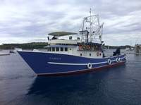 |
| Tuljan (Seal) | 26 m | 100 GT |  |
| Tuljan dva (Seal two) | 32 m | 195 GT |  |
| Sestrica (Little sister) | 27 m | 140 GT |  |
| Kali | 24 m | 118 GT | 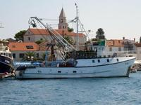 |
| Marlin | 31 m | 182 GT | 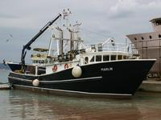 |
| Napredak (Progress) | 25 m | 100 GT | 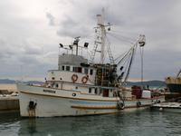 |
| Eva | 24 m | 118 GT | 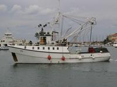 |
| Haringa (Herring) | 18 m | 50 GT | 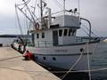 |
| Jordan | 28 m | 161 GT | 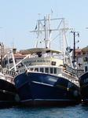 |
| Stjepan | 28 m | 163 GT |  |
| Bruno | 29 m | 169 GT | 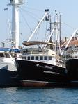 |
| Tacoma | 33 m | 180 GT |  |
{kind=link}
{kind=link}
{kind=link}
{kind=link}
{kind=link}
{kind=link}
{kind=link}
{kind=link}
Towboats:
| Ship name | Length | Weight | Picture |
|---|---|---|---|
| Cezar | 26 m | 181 GT | 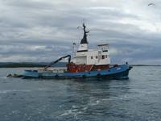 |
| Trapa | 24 m | 120 GT |  |
{kind=link}
Refrigerator ship:
| Ship name | Length | Weight | Picture |
|---|---|---|---|
| Ledenik | 63 m | 500 GT | 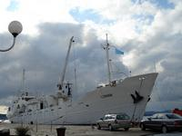 |
{kind=link}
Other ships and vessels
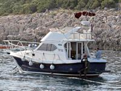Apart for previously described ships, we use a number of other ships and vessels for farm maintenance, tuna food and workers transportation. In case of unpredicted interventions on the sea we use Calafuria, working ship originally built for Italian coast guard service.
{kind=link}
One of many interesting stories from our business is that we developed specifically for our work (speed boats for tuna fishing, and work vessels for tuna feeding and tuna cage maintenance). At the start we were using common rubber boats, but they prove to be too sensitive and unreliable. We needed something similar in shape but reliable, so we made this dependable work vessels using high density polyethylene.
developed specifically for our work (speed boats for tuna fishing, and work vessels for tuna feeding and tuna cage maintenance). At the start we were using common rubber boats, but they prove to be too sensitive and unreliable. We needed something similar in shape but reliable, so we made this dependable work vessels using high density polyethylene.